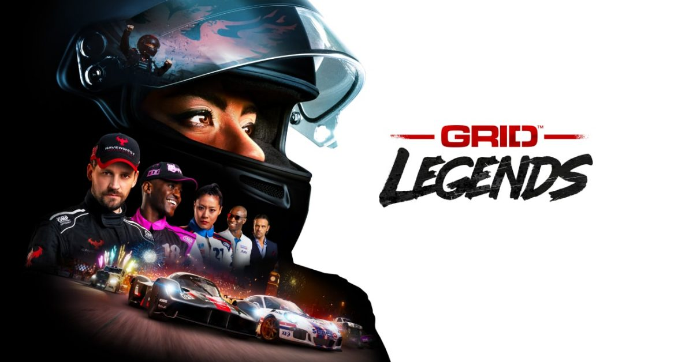
GRID Legends (Apple Silicon)
⚠️ TO BE RELEASED⚠️
Porting the game GRID Legends to Apple Silicon at Feral Interactive
Featured in WWDC22.
Translating D3D12 features into Metal, such as descriptor ranges / bindless textures.
General graphics bug fixing, particularly shaders.
Learn more!
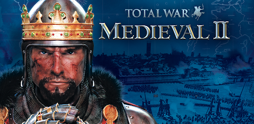
Total War: Medieval II (iOS port)
Porting the game Total War: Medieval II to mobile platforms at Feral Interactive
Metal graphics development and bug fixing.
Most of my work was focused on texture handling, in particular adjusting the original D3D9 sprite atlas system to work with ASTC compressed textures.
Get it on the App Store
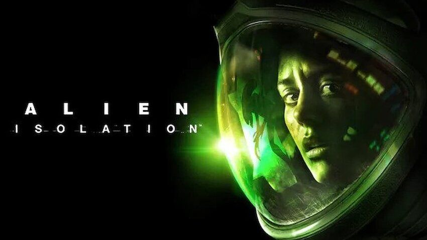
Alien: Isolation (iOS port) 🥉
Porting the game Alien: Isolation to mobile platforms at Feral Interactive, which was a finalist for the WWDC22 Design Awards in the "Visuals and Graphics" category.
I focused on the iOS and iPadOS port, adapting the existing engine to Apple's Tile-Based GPUs, as well as performing general improvements and bug fixing on the D3D11-to-Metal translation layer.
Get it on the App Store
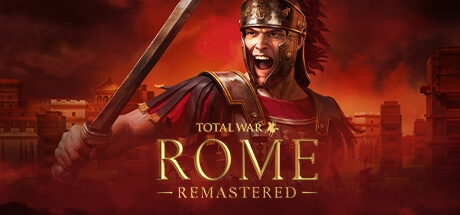
Total War: ROME REMASTERED
Remaster of the classic RTS game Rome Total War, developed at Feral Interactive.
I worked mostly expanding the animation system, fixing bugs on the new LOD and shadow systems and improving some particle VFX like sandstorms and blizzards, as well as performing some general bug fixing and optimisations.
Get it on Steam
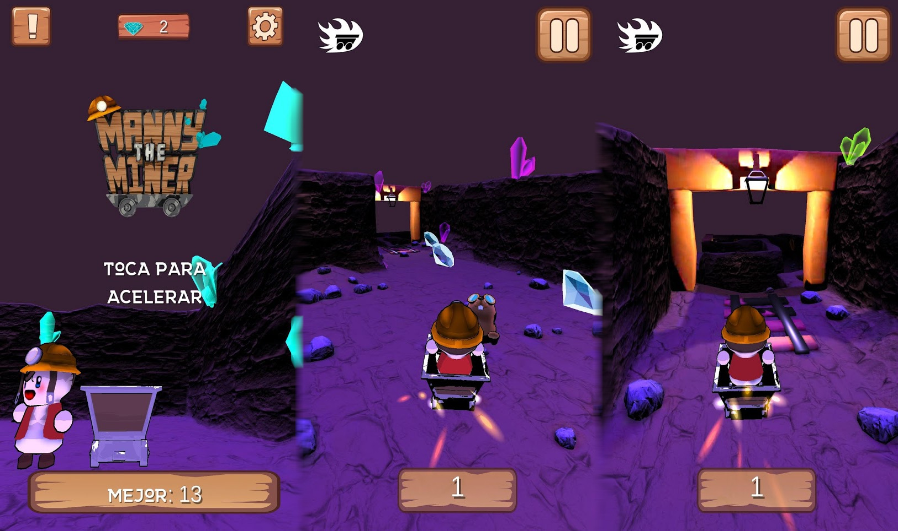
Manny The Miner
Endless runner Android game to which I contributed with:
- Project management / Production
- Smooth accelerometer input feature
- Dash ability
- Particles effects
Get it on the Play Store
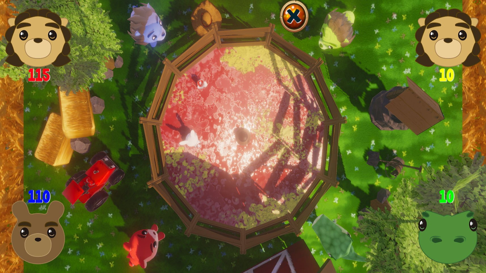
Wabbit Season
Local multiplayer Android game, inspired by the tabletop game Hungry Hungry
Hippos, to which I contributed with:
- Custom decal shader
- Particle effects
- Particle pool + timing wheel system
- Scene layout
Get it on the Play Store
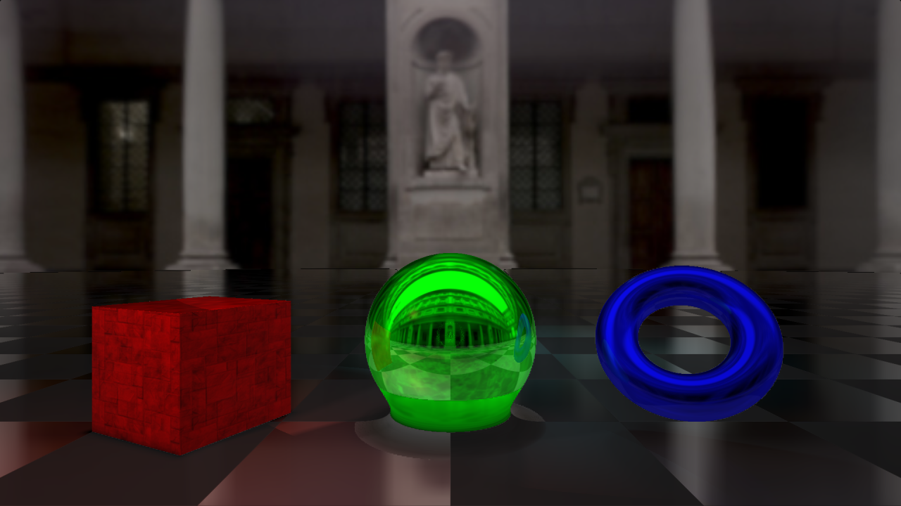
Generic RayMarching Shader
A personal experiment with Ray Marching, meant to be used as the base for future
work. The list of features includes:
- Configurable scene with support to multiple shapes and lights.
- Ambient Occlusion.
- 1 step reflections.
- Image-based ambient light.
- Triplanar texture mapping
Take a look to the code
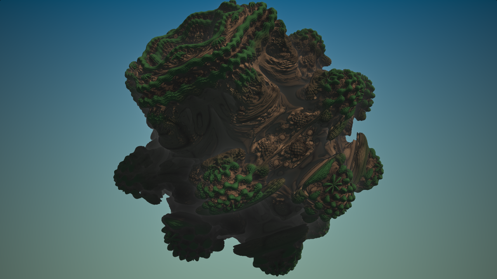
Planet Broccoli
A Mandelbulb fractal shader using my generic raymarcher.
The list of features includes:
- Support for multiple and lights.
- Ambient Occlusion and coloring based on orbit traps.
- Depth-based mist.
Take a look to the code
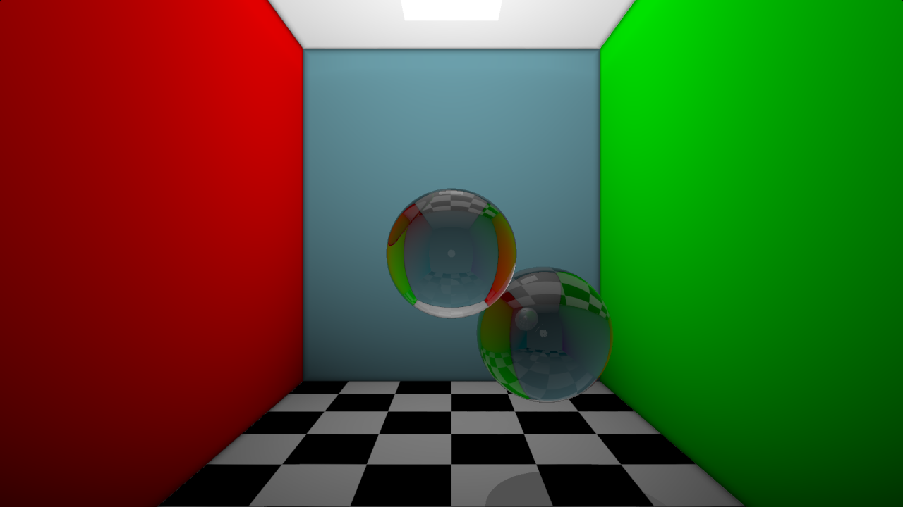
Raymarching refraction study
A study on refraction in a Cornell Box, using my generic raymarcher shader.
The main additions include:
- Faked area light (no real sampling).
- Glass material that refracts and reflects light.
Take a look to the code
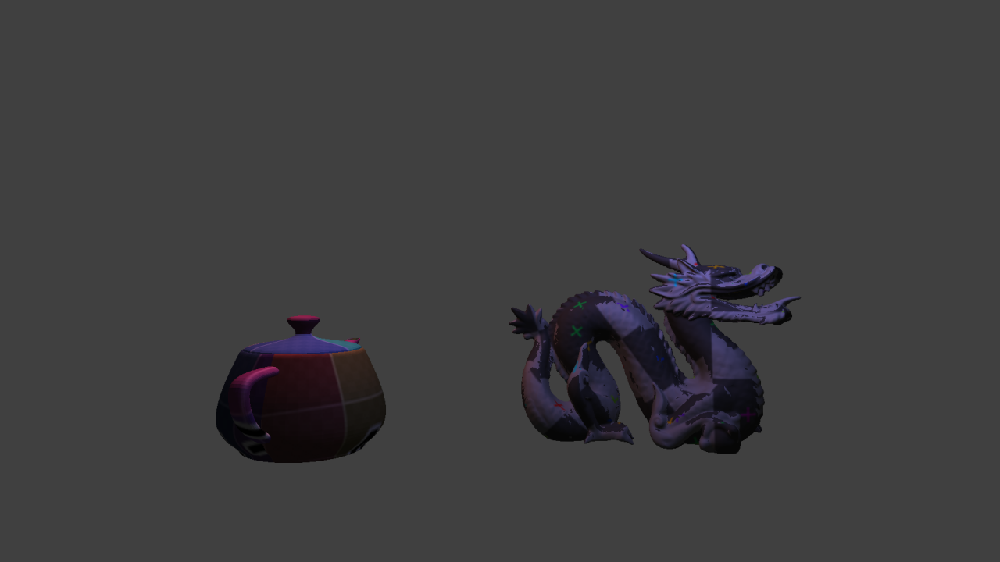
Virtual Phoenix Engine [WIP]
A toy engine made with C++ and Vulkan.
Work Stopped for now in favor of a Metal toy engine.
Main current features:
- Forward rendering.
- Blinn-Phong lighting model.
- Importing of fbx and obj files.
- Multiple materials.
- Multiple ligths.
- Mouse-driven scene navigation.
Planned features:
- Shadows.
- GUI.
- PBR shading.
- Deferred rendering.
Take a look to the code
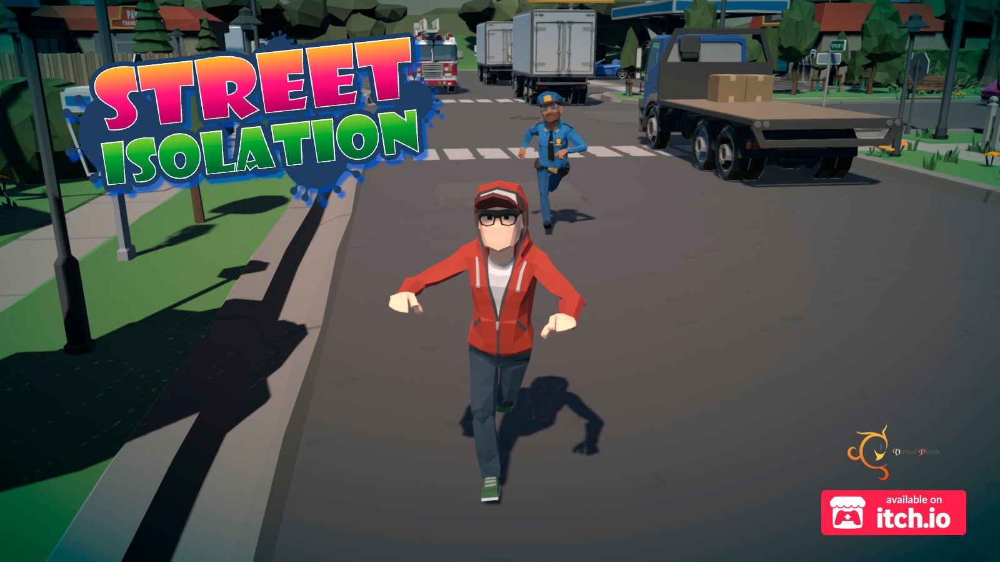
Street Isolation
A PC game developed for the ESNE's Game JamOn meant to bring attention to the consequences of evading confinement and social distancing measures during the COVID-19 pandemic.
I contributed with:
- Main Menu scene layout
- Level desing
- Part of the enemies' AI
Have a look

The Legend Of Lilyth
A PC game developed for the second Brackeys Game Jam, with the theme
Love is blind.
My job consisted mainly in:
- Minimap
- Particles and VFX
- Lighting and postprocessing
Have a look
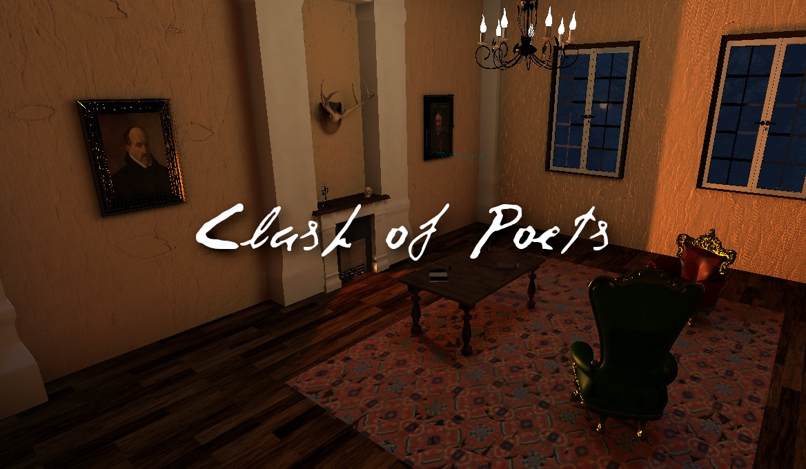
Clash of Poets
A VR game developed for the spanish Government's Game Jam Cultural with the
theme of spanish culture.
I worked on:
- Environment layout
- Lighting
Have a look